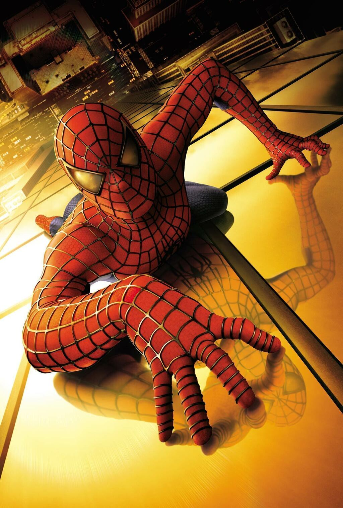
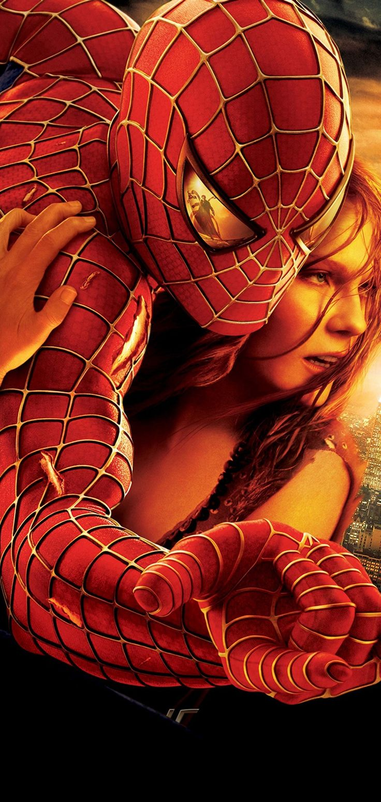
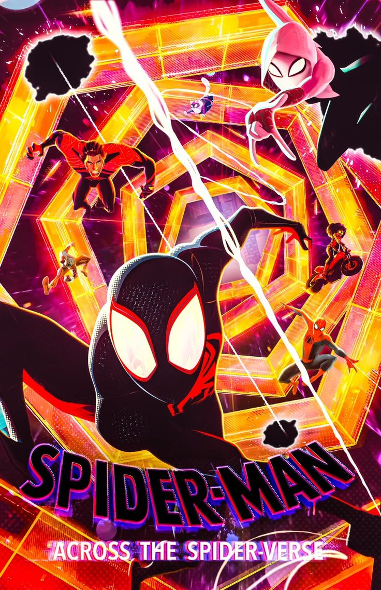

Lista de excelentes filmes

Depois de ser picado por uma aranha geneticamente modificada em uma
demonstração científica, o jovem nerd Peter Parker ganha
superpoderes. Inicialmente, ele pretende usá-los para para ganhar
dinheiro, adotando o nome de Homem-Aranha e se apresentando em lutas
de exibição. Porém, ao presenciar o assassinando de seu tio Ben e
sentir-se culpado, Peter decide não mais usar seus poderes para
proveito próprio e sim para enfrentar o mal, tendo como seu primeiro
grande desafio o psicótico Duende Verde.

O Dr. Otto Octavius é transformado em Doutor Octopus quando uma falha em uma experiência de fusão nuclear resulta em uma explosão que mata sua esposa. Ele culpa o Homem-Aranha pelo acidente e deseja vingança. Enquanto isso, o alter ego do herói, Peter Parker, perde seus poderes. Para complicar as coisas, o seu melhor amigo odeia o Homem-Aranha e sua amada fica noiva..

Após ser atingido por uma teia radioativa, Miles Morales, um jovem negro do Brooklyn, se torna o Homem-Aranha, inspirado no legado do já falecido Peter Parker. Entretanto, ao visitar o túmulo de seu ídolo em uma noite chuvosa, ele é surpreendido com a presença do próprio Peter, vestindo o traje do herói por baixo de um sobretudo. A surpresa fica ainda maior quando Miles descobre que ele veio de uma dimensão paralela, assim como outras versões do Homem-Aranha.